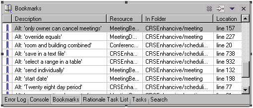
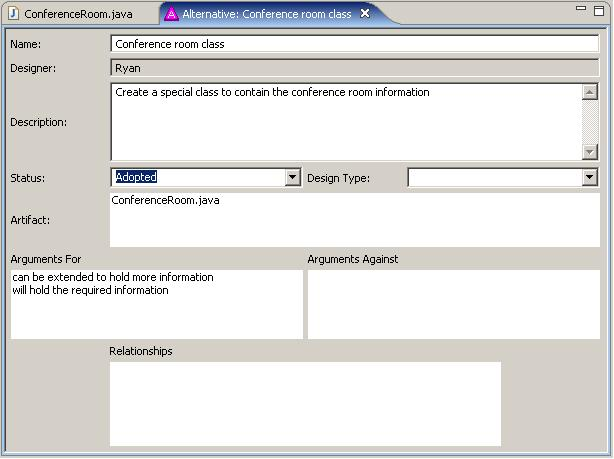

Finding Associated Rationale
There are several ways to find rationale associated with the code. If you have
the code, and want to know if there is rationale, and what it is, the first
thing to do is to look if there is a “SEURAT Ratmarker” in the code, denoted by an “”
in the left-hand margin. If yes, the name of the rationale can be displayed by
putting the mouse over the “.” The rationale will also be displayed on the
Bookmark View (SEURAT ratmarkers are a type of bookmark). The following figure shows the Bookmark View.

If the user has an alternative and they want to know the
associated code, they can bring up the alternative in the editor to see if the
association has been made, and to what. The following figure shows an alternative with a
code association listed.

The user can also look for the alternative in the Bookmark View
and by clicking the bookmark entry, can bring up the associated code in the
editor.